Spatial niche detection with STniche
Visium (GSE175540) and CosMx (ccRCC) case studies
Yonatan Mekonnen
2026-11-06
Source:vignettes/vignette_stniche.Rmd
vignette_stniche.RmdIntroduction
Tissues are organised into local microenvironments, or niches, in which particular cell types and molecular programmes co-occur. Identifying niches matters because their composition and spatial arrangement are often more informative about tissue function and disease state than bulk or per-cell expression alone.
STniche (part of spatialGE) detects niches directly from spatial transcriptomics data in three steps:
- Gene-set scoring. Each spot or cell receives an activity score for every gene set of interest.
- Spatial autocorrelation. A local Moran’s I statistic (reported as a Z-score, Zi) measures whether each gene set is spatially concentrated around that location, rather than merely expressed.
- Clustering. The Zi profiles are clustered (model-based clustering, number of niches chosen by BIC), so that each niche is defined by which programmes are locally organised together.
This vignette applies STniche to two technologies and uses each to answer a specific question:
| Dataset | Technology | Question |
|---|---|---|
| GSE175540 (24 RCC sections, FFPE and fresh frozen) | Visium (spot level) | Do STniche niches recover pathologist-annotated tertiary lymphoid structures (TLS)? |
| ccRCC tumour fields of view (FOVs) | CosMx (single-cell level) | Which cell types and immune programmes define each niche, and does niche-level immune activity differ between immunotherapy (IO)-naive and IO-exposed tumours? |
Setup and data
All data are downloaded automatically on first use (GEO for Visium;
Zenodo and Springer for CosMx). Set visium_root,
cosmx_root or out_root in the YAML header to
reuse local copies. The chunks below show the main steps only:
download, build one STlist per
sample, and merge. Low-level plumbing
(download retries, unpacking the GEO archive, per-FOV subsetting of the
Seurat object) is kept in a hidden helpers chunk in the Rmd
source, and progress messages are suppressed to keep the page
readable.
# Data sources (downloaded automatically on first use)
GEO_VISIUM_URL <- "https://ftp.ncbi.nlm.nih.gov/geo/series/GSE175nnn/GSE175540/suppl/GSE175540_RAW.tar"
ZENODO_COSMX_URL <- "https://zenodo.org/records/12730227/files/seurat_object.Rds?download=1"
SPRINGER_CLINICAL_URL <- "https://static-content.springer.com/esm/art%3A10.1186%2Fs13059-024-03435-z/MediaObjects/13059_2024_3435_MOESM2_ESM.xlsx"
SPRINGER_REFERER <- "https://genomebiology.biomedcentral.com/articles/10.1186/s13059-024-03435-z"
# Local folders (YAML params override; empty = temporary folder)
data_root <- file.path(tempdir(), "spatial_data")
visium_root <- if (nzchar(params$visium_root)) path.expand(params$visium_root) else
file.path(data_root, "Visium", "GSE175540")
cosmx_root <- if (nzchar(params$cosmx_root)) path.expand(params$cosmx_root) else
file.path(data_root, "CosMx", "CosMx_ccRCC")
out_root <- if (nzchar(params$out_root)) path.expand(params$out_root) else
file.path(tempdir(), "spatialGE_outputs")
run_visium <- isTRUE(params$run_visium)
run_cosmx <- isTRUE(params$run_cosmx)
stopifnot(run_visium || run_cosmx)
n_cores <- max(1, parallel::detectCores() - 1)Step 1: Download the data
Each call below fetches the raw files if they are not already
present. For Visium the GEO archive is unpacked into one Space Ranger
folder per section; for CosMx the Seurat object and the clinical table
(which defines IO status) are downloaded. The helper functions are
defined in the hidden helpers chunk of the Rmd source.
if (run_visium) {
ds_root <- download_visium(visium_root, GEO_VISIUM_URL)
visium_cfg <- list(ds_root = ds_root, mode = "GSE175540",
out_dir = file.path(out_root, "spatialGE_out", "GSE175540"))
}
if (run_cosmx) {
cosmx_inputs <- download_cosmx(cosmx_root, ZENODO_COSMX_URL,
SPRINGER_CLINICAL_URL, SPRINGER_REFERER)
cosmx_cfg <- list(cosmx_root = cosmx_root, inputs = cosmx_inputs,
out_dir = file.path(out_root, "spatialGE_out", "cosmx"))
}Step 2: Build the STlist objects
Visium. One STlist is created per
section from its Space Ranger folder, spots with fewer than 500 reads or
300 genes are removed, and counts are log-transformed. The sections are
then merged into a single object.
STs <- list()
if (run_visium) {
sample_dirs <- visium_sample_dirs(visium_cfg$ds_root)
build_sample <- function(d) {
st <- STlist(d, samples = basename(d), cores = 1)
st <- filter_data(st, spot_minreads = 500, spot_mingenes = 300)
transform_data(st, method = "log", cores = 1)
}
per_sample <- lapply(sample_dirs, function(d)
tryCatch(build_sample(d), error = function(e) NULL))
names(per_sample) <- basename(sample_dirs)
st_v <- merge_stlists(per_sample)
STs$visium <- list(st = st_v, smp1 = names(st_v@spatial_meta)[1],
out_dir = visium_cfg$out_dir,
label = paste0("Visium (", length(st_v@spatial_meta), " samples)"),
fov = NA_character_, mode = visium_cfg$mode)
}CosMx. The Seurat object is read together with the
clinical table, which assigns each FOV an IO status (IO-naive or
IO-exposed). Every tumour FOV with a known IO status becomes one
STlist (counts, cell coordinates, cell type;
SCT-normalised), and the FOVs are merged into a single object.
if (run_cosmx) {
prep <- load_cosmx(cosmx_cfg$inputs, params$cosmx_celltype_col)
io_map <- prep$io_map # FOV -> IO status
celltypes <- prep$celltypes # per-cell type labels, used for abundance later
requested <- if (identical(tolower(as.character(params$cosmx_fov)), "all")) {
prep$design %>%
filter(FOV_majority == "Tumor", !is.na(IO)) %>%
transmute(fov_name = paste0(Slide_name, "_fov", fov)) %>%
pull(fov_name)
} else trimws(strsplit(as.character(params$cosmx_fov), ",")[[1]])
requested <- unique(requested[!is.na(requested) & nzchar(requested)])
st_per_fov <- setNames(lapply(requested, build_cosmx_fov, prep = prep), requested)
st_multi <- merge_stlists(st_per_fov)
STs$cosmx <- list(st = st_multi, smp1 = names(st_multi@spatial_meta)[1],
out_dir = cosmx_cfg$out_dir,
label = paste0("CosMx (", length(st_multi@spatial_meta), " FOVs)"),
fov = requested)
rm(prep); invisible(gc())
}| Platform | Samples | Unit | Total units | Median per sample |
|---|---|---|---|---|
| Visium | 24 | spots | 73,287 | 2,866 |
| CosMx | 19 | cells | 65,547 | 3,426 |
| Platform | Sample | Context | Units |
|---|---|---|---|
| Visium | ffpe_c_02 | FFPE | 4449 |
| Visium | frozen_a_01 | Fresh frozen | 1450 |
| CosMx | RCC3_fov1 | IO-naive | 4501 |
| CosMx | RCC4_fov3 | IO-exposed | 3227 |
Running STniche
STniche is run jointly on all samples of a platform, so niche labels
(C1, C2, …) are shared across samples and directly comparable. The ten
gene sets below were chosen to cover the programmes that define lymphoid
organisation (TLS, germinal centre, antigen presentation) and the
inflammatory signalling that accompanies it (interferon, complement,
NF-kB, cytokine pathways). The two build-* chunks above
show the main steps used to assemble each STlist: one Space
Ranger folder per Visium section, and one subset of the CosMx Seurat
object per FOV. To use your own data, set visium_root /
cosmx_root in the YAML header to your folders; the required
Visium layout is one Space Ranger folder per sample (see
visium_sample_dirs() in the helpers chunk).
Every STlist must be transformed before
STniche; the filter_data and
transform_data calls are in those same chunks.
| Gene set | Genes | Readout |
|---|---|---|
| TLS_core | 6 | TLS organisation and lymphocyte homing chemokines |
| GC_Bcell | 6 | Germinal-centre B-cell programme |
| Antigen_Presentation | 5 | MHC class II antigen presentation |
| IFNG_RESPONSE | 8 | Interferon-gamma response (T-cell activity) |
| COMPLEMENT | 12 | Complement cascade |
| IFNA_RESPONSE | 11 | Type I interferon response |
| TNFA_NFKB | 13 | TNF-alpha / NF-kB signalling |
| IL2_STAT5_TGFB | 10 | IL-2/STAT5 and TGF-beta signalling |
| IL6_JAK_STAT3 | 8 | IL-6/JAK/STAT3 signalling |
| INFLAMMATORY_RESPONSE | 13 | General inflammatory response |
Two neighbourhood sizes (stniche_knns) are run. The
first (kNN = 22) is the primary analysis used in all figures; the second
serves as a sensitivity check. Each run starts from the same input
object, so the niche labels stored in the STlist always correspond to
the Zi matrix used alongside them.
stniche_knns <- as.integer(params$stniche_knns)
stniche_ks <- as.integer(params$stniche_ks)
stniche_gene_sets <- lapply(params$stniche_gene_sets,
function(v) as.character(unlist(v)))
for (nm in names(STs)) {
st0 <- STs[[nm]]$st
runs <- lapply(stniche_knns, function(k)
spatialGE::STniche(x = st0, gene_sets = stniche_gene_sets,
samples = names(st0@spatial_meta),
ks = stniche_ks, knns = k, out_i = TRUE,
cores = n_cores, verbose = 1L))
names(runs) <- paste0("knn", stniche_knns)
STs[[nm]]$st <- runs[[1]][[1]]
STs[[nm]]$fits <- lapply(runs, `[[`, 2)
STs[[nm]]$alt <- lapply(runs, `[[`, 1)
}
Zi_of <- function(nm) STs[[nm]]$fits[[1]]| Platform | Sample | Niches | Smallest | Largest |
|---|---|---|---|---|
| Visium | ffpe_c_02 | 10 | 18 | 1031 |
| Visium | frozen_a_01 | 10 | 9 | 575 |
| CosMx | RCC3_fov1 | 10 | 3 | 953 |
| CosMx | RCC4_fov3 | 10 | 72 | 659 |
| Platform | kNN (primary) | kNN (check) | Adjusted Rand index |
|---|---|---|---|
| Visium | 22 | 6 | 0.14 |
| CosMx | 22 | 6 | 0.05 |
Spatial organisation of niches
A useful niche should form spatially coherent territories. The maps below colour each spot or cell by niche, and the second set of maps shows the underlying Local Moran’s Z signal for the TLS gene set that the niches are partly built from.
Niche maps
p <- plot_stniche(STs$visium$st, type = "clusters",
samples = FOVS_PLOT$visium, overlay_samples = FALSE,
ptsize = 0.9, title = "STniche niches - Visium")
show_plots(p)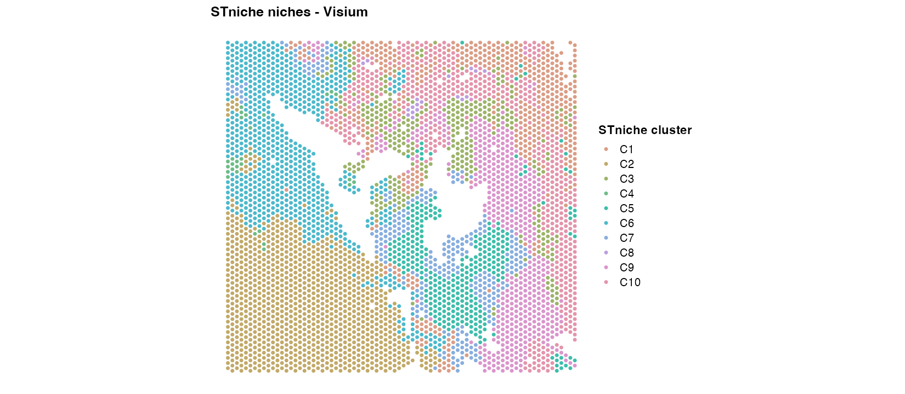
STniche niches in section ffpe_c_02 (FFPE).
STniche niches in section frozen_a_01 (fresh frozen).
p <- plot_stniche(STs$cosmx$st, type = "clusters",
samples = FOVS_PLOT$cosmx, overlay_samples = FALSE,
ptsize = 0.9, reverse_y = TRUE,
title = "STniche niches - CosMx")
show_plots(p)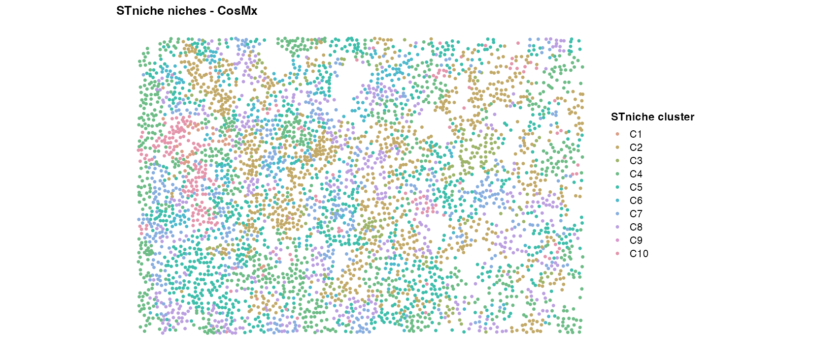
STniche niches in FOV RCC3_fov1 (IO-naive).
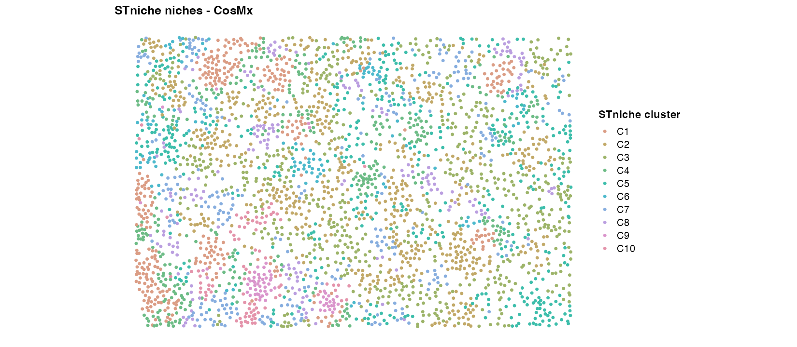
STniche niches in FOV RCC4_fov3 (IO-exposed).
Local Moran’s Z of the TLS gene set
High Zi marks locations where TLS-associated genes are locally clustered, which is the signal that lets STniche separate lymphoid aggregates from diffusely expressing tissue.
for (nm in names(STs)) {
Zi <- Zi_of(nm)
gs <- if ("TLS_core" %in% rownames(Zi)) "TLS_core" else rownames(Zi)[1]
p <- plot_stniche(STs[[nm]]$st, type = "Zi", zi = Zi, gene_set = gs,
samples = FOVS_PLOT[[nm]], overlay_samples = FALSE,
ptsize = 0.8, reverse_y = identical(nm, "cosmx"),
title = sprintf("%s - Local Moran's Z - %s", gs, plat_lab[[nm]]))
show_plots(p)
}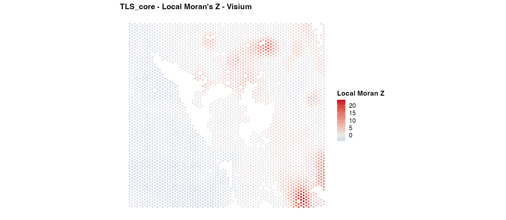
Local Moran’s Z of the TLS_core gene set in section ffpe_c_02 (FFPE).
Local Moran’s Z of the TLS_core gene set in section frozen_a_01 (fresh frozen).
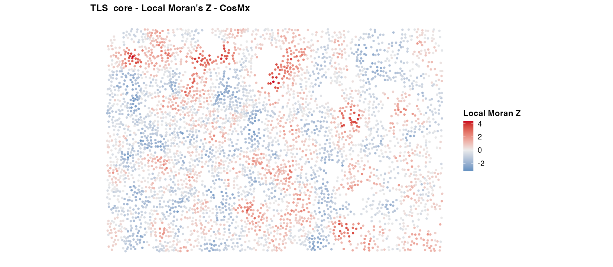
Local Moran’s Z of the TLS_core gene set in FOV RCC3_fov1 (IO-naive).
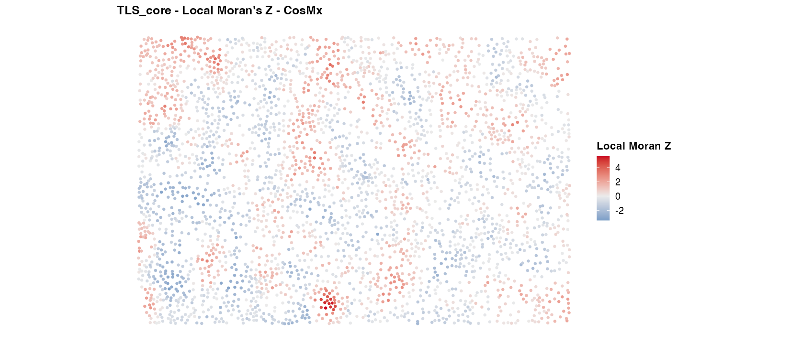
Local Moran’s Z of the TLS_core gene set in FOV RCC4_fov3 (IO-exposed).
Biological identity of niches
Spatial coherence alone does not say what a niche is. We characterise each niche by (i) the mean Zi of every gene set across all of its members, which gives its functional signature, and (ii) for CosMx, its cell-type composition.
Gene-set signatures
Each tile is the mean Local Moran’s Z of a gene set within a niche (red = programme spatially concentrated, blue = spatially depleted). Values are pooled over all samples of the platform, and the number of spots or cells in each niche is shown beneath its label.
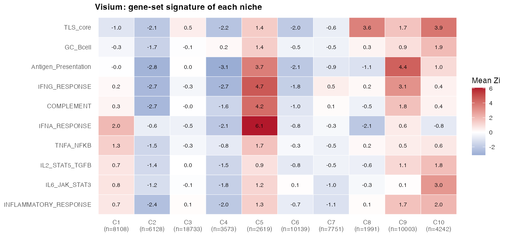
Mean Local Moran’s Z of each gene set within each Visium niche. Values are pooled over all 24 sections; n is the number of spots in the niche.
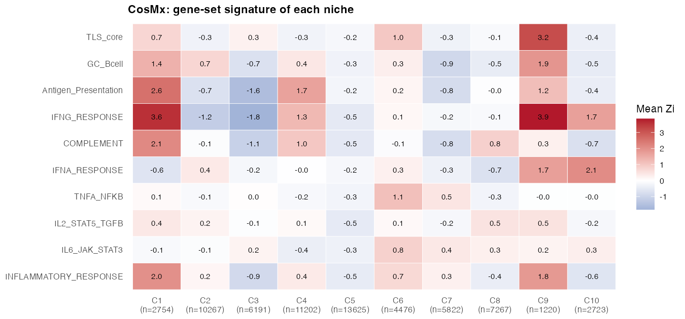
Mean Local Moran’s Z of each gene set within each CosMx niche. Values are pooled over all 19 FOVs; n is the number of cells in the niche.
Cell-type composition of CosMx niches
Because CosMx resolves single cells, each niche can be annotated with the cell types that populate it. This links the molecular signatures above to concrete cellular neighbourhoods (for example, immune aggregates versus tumour or stromal regions).
Cluster × cell-type heatmap
For each representative FOV, this heatmap shows the fraction of each niche’s cells that belong to each cell type. Rows are niches, columns are cell types, and cell values are the proportion of cells in that niche assigned to that cell type. Bright tiles therefore mark the dominant cell types of a niche, so a niche with a single bright column is a “pure” niche and one with many moderate tiles is a “mixed” niche.
for (nm in intersect(names(STs), "cosmx")) {
for (s in FOVS_PLOT[[nm]]) {
ht <- plot_stniche(STs[[nm]]$st, samples = s,
type = "celltype_heatmap",
title = sprintf("Cell types within STniche clusters | %s", s))
if (inherits(ht, "Heatmap")) {
draw(ht, heatmap_legend_side = "right")
} else if (is.list(ht)) {
for (h in ht) if (inherits(h, "Heatmap")) draw(h, heatmap_legend_side = "right")
}
}
}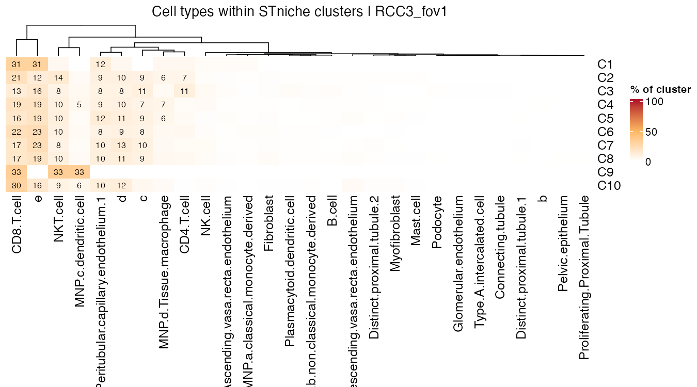
Cell-type composition of STniche niches in FOV RCC3_fov1 (IO-naive).
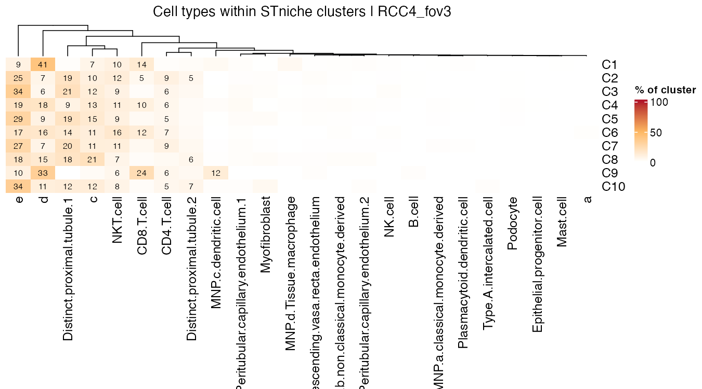
Cell-type composition of STniche niches in FOV RCC4_fov3 (IO-exposed).
Cell-type composition per niche (stacked bars)
The heatmap is compact, but it is hard to judge from it how much of a niche a cell type actually occupies. A stacked bar answers that directly: each bar is one niche, its segments sum to 100%, and the number of cells behind it is printed beneath the label. This serves three purposes. First, it shows how pure a niche is (a single dominant cell type) versus how mixed it is. Second, it puts all niches on a common scale so that they can be compared side by side. Third, drawing the representative samples in separate panels shows whether a niche with the same label has the same cellular make-up in different samples (here IO-naive versus IO-exposed), which pooled summaries would hide. The bars are compositional: they describe shares of a niche, not enrichment relative to the whole tissue, so they should be read together with the heatmap and with the niche size.
for (nm in intersect(names(STs), "cosmx")) {
p_list <- plot_stniche(STs[[nm]]$st, type = "celltype_composition",
samples = FOVS_PLOT[[nm]],
title = "Cell-type composition per cluster")
for (s in names(p_list)) {
cat("\n\n#### ", s, " (", io_of(s), ")\n\n", sep = "")
print(p_list[[s]])
}
}
#### RCC3_fov1 (IO-naive)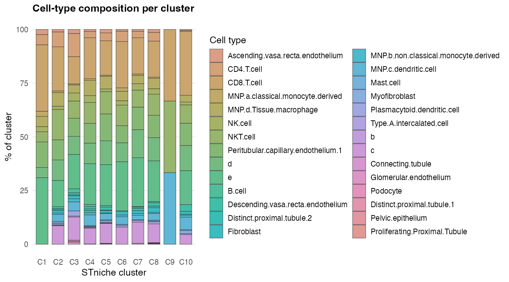
Cell-type composition of each STniche niche in the representative FOVs RCC3_fov1 (IO-naive) and RCC4_fov3 (IO-exposed). Bar segments sum to 100% of the cells in the niche; n is the number of cells. Rare cell types are collapsed into Other.
#### RCC4_fov3 (IO-exposed)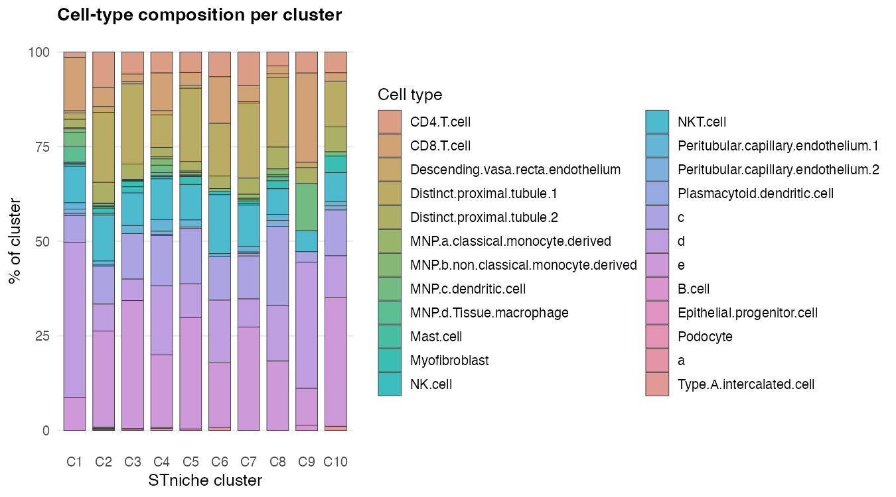
Cell-type composition of each STniche niche in the representative FOVs RCC3_fov1 (IO-naive) and RCC4_fov3 (IO-exposed). Bar segments sum to 100% of the cells in the niche; n is the number of cells. Rare cell types are collapsed into Other.
Niche correspondence between samples
The alluvial plots connect niches of the two representative samples through the gene-set programme they share most strongly. Link colour shows the shared programme, so flows of one colour indicate niches in different samples (FFPE versus frozen; IO-naive versus IO-exposed) that share the same dominant signal.
for (nm in names(STs)) {
p <- plot_stniche(x = STs[[nm]]$st, type = "multi_sample_alluvial",
samples = FOVS_PLOT[[nm]], zi = Zi_of(nm),
title = sprintf("%s niche correspondence", plat_lab[[nm]]))
print(natural_niche_order(p))
}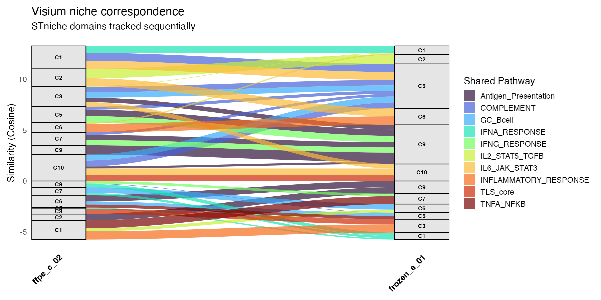
Niche correspondence between the two representative sections, ffpe_c_02 (FFPE) and frozen_a_01 (fresh frozen).
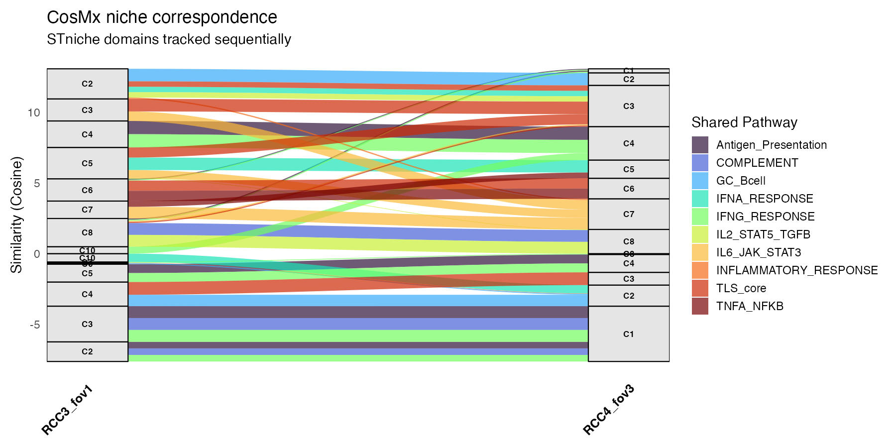
Niche correspondence between the two representative FOVs, RCC3_fov1 (IO-naive) and RCC4_fov3 (IO-exposed).
Validation against TLS pathology (Visium)
GSE175540 provides a pathologist label for every spot
(TLS, T_agg for T-cell aggregates, or no
structure). These labels were not used by STniche, so
they provide an independent test of whether the niches capture real
lymphoid organisation.
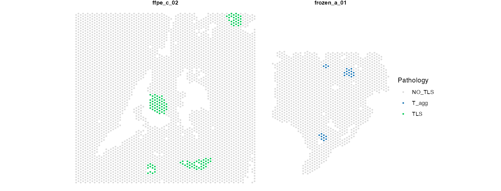
Pathologist annotation of TLS and T-cell aggregates (T_agg) in the Visium sections ffpe_c_02 (FFPE) and frozen_a_01 (fresh frozen).
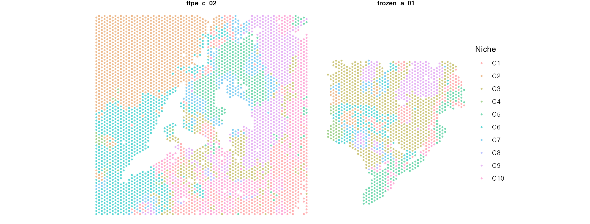
STniche niches in the same sections (ffpe_c_02 (FFPE) and frozen_a_01 (fresh frozen)).
The table lists, for every niche, how many spots carry each pathology label and the fraction annotated as TLS or T-cell aggregate. A niche with a high fraction is a candidate lymphoid-structure niche.
| Sample | Niche | NO_TLS | T_agg | TLS | % TLS or T_agg |
|---|---|---|---|---|---|
| ffpe_c_02 | C8 | 14 | 0 | 4 | 22.2 |
| ffpe_c_02 | C10 | 509 | 0 | 65 | 11.3 |
| ffpe_c_02 | C3 | 320 | 0 | 29 | 8.3 |
| ffpe_c_02 | C7 | 289 | 0 | 5 | 1.7 |
| ffpe_c_02 | C6 | 759 | 0 | 13 | 1.7 |
| ffpe_c_02 | C1 | 488 | 0 | 6 | 1.2 |
| ffpe_c_02 | C9 | 553 | 0 | 2 | 0.4 |
| ffpe_c_02 | C2 | 1031 | 0 | 0 | 0.0 |
| ffpe_c_02 | C4 | 29 | 0 | 0 | 0.0 |
| ffpe_c_02 | C5 | 333 | 0 | 0 | 0.0 |
| frozen_a_01 | C9 | 186 | 14 | 0 | 7.0 |
| frozen_a_01 | C10 | 39 | 2 | 0 | 4.9 |
| frozen_a_01 | C7 | 78 | 3 | 0 | 3.7 |
| frozen_a_01 | C5 | 176 | 4 | 0 | 2.2 |
| frozen_a_01 | C3 | 571 | 4 | 0 | 0.7 |
| frozen_a_01 | C1 | 121 | 0 | 0 | 0.0 |
| frozen_a_01 | C2 | 55 | 0 | 0 | 0.0 |
| frozen_a_01 | C4 | 38 | 0 | 0 | 0.0 |
| frozen_a_01 | C6 | 150 | 0 | 0 | 0.0 |
| frozen_a_01 | C8 | 9 | 0 | 0 | 0.0 |
Immune context and immunotherapy exposure (CosMx)
The CosMx tumours include patients with and without prior immunotherapy (IO). The final analyses ask whether cytotoxic CD8 T cells and M2-like macrophages, two cell types with opposing roles in anti-tumour immunity, differ by IO status, whether they are spatially associated, and whether the niches in which CD8 T cells reside differ in their immune signalling.
Abundance of CD8 T cells and M2 macrophages
Cell-type fractions are computed from the published annotation for every FOV with a known IO status. This establishes the baseline immune composition before examining spatial relationships.
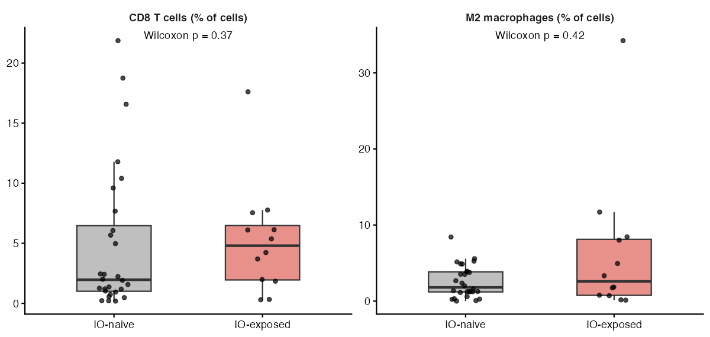
CD8 T-cell and M2-macrophage fractions per FOV by IO status (Wilcoxon rank-sum test).
| Metric | IO-naive | IO-exposed | n (naive / exposed) | p |
|---|---|---|---|---|
| CD8 T cells (% of cells) | 1.97 (1.01-6.47) | 4.80 (1.95-6.49) | 28 / 12 | 0.373 |
| M2 macrophages (% of cells) | 1.80 (1.21-3.85) | 2.59 (0.76-8.12) | 28 / 12 | 0.422 |
Across FOVs, CD8 and M2 fractions are correlated (Spearman rho = 0.31, p = 0.051), suggesting that both populations might have a tracking tendency for the overall immune infiltration.
Spatial relationship between CD8 T cells and M2 macrophages
Abundance does not reveal whether the two cell types share tissue space. The maps show their positions in the representative FOVs, and the cross-type Ripley’s K function quantifies co-localisation across all FOVs: it compares the number of M2 cells found within radius r of a CD8 cell with the number expected under spatial randomness (values above zero indicate co-localisation).
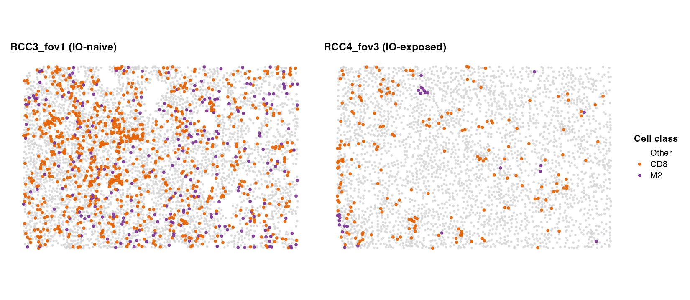
Spatial distribution of CD8 T cells and M2 macrophages in the representative FOVs RCC3_fov1 (IO-naive) and RCC4_fov3 (IO-exposed).
![CD8 to M2 cross-type K function (observed minus expected under randomness). Thin lines: individual FOVs; thick lines: group means. Group means (blue = IO-naive, red = IO-exposed) run above the dashed null line in both groups, indicating CD8-M2 co-localisation irrespective of IO status; the two group means overlap and the individual FOV curves span a wide range, consistent with the absence of an IO-group difference in excess K at r = 200 (Wilcoxon p = 0.68). The gradual rise with radius reflects the cumulative nature of K and points to diffuse, region-level co-localisation of the two populations (cf. Figure 19 and the positive CD8-M2 correlation reported under Table 7) rather than tight cell-contact-scale clustering.](vignette_stniche_files/figure-html/ripley-1.png)
CD8 to M2 cross-type K function (observed minus expected under randomness). Thin lines: individual FOVs; thick lines: group means. Group means (blue = IO-naive, red = IO-exposed) run above the dashed null line in both groups, indicating CD8-M2 co-localisation irrespective of IO status; the two group means overlap and the individual FOV curves span a wide range, consistent with the absence of an IO-group difference in excess K at r = 200 (Wilcoxon p = 0.68). The gradual rise with radius reflects the cumulative nature of K and points to diffuse, region-level co-localisation of the two populations (cf. Figure 19 and the positive CD8-M2 correlation reported under Table 7) rather than tight cell-contact-scale clustering.
At r = 200, median excess K is 53184 (IO-naive, n = 8) versus 96611 (IO-exposed, n = 4); Wilcoxon p = 0.68.
Immune signalling in CD8 T-cell niches
Finally, we ask whether the microenvironment around CD8 T cells differs by IO status. For each FOV we average the Local Moran’s Z of every gene set over its CD8 T cells (FOVs with at least five CD8 cells). Testing each gene set between IO groups highlights programmes (for example interferon signalling) that differ between groups.
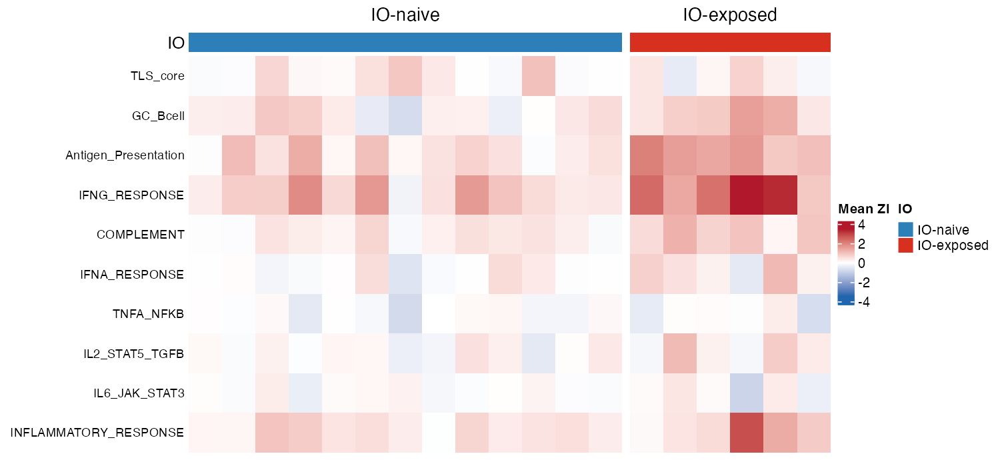
Mean Local Moran’s Z of each gene set in CD8 T cells, per FOV, grouped by IO status.
| Gene set | Mean Zi, naive | Mean Zi, exposed | p | FDR |
|---|---|---|---|---|
| Antigen_Presentation | 0.498 | 1.434 | 0.001 | 0.014 |
| IFNG_RESPONSE | 0.783 | 2.291 | 0.003 | 0.016 |
| GC_Bcell | 0.196 | 0.878 | 0.007 | 0.022 |
| COMPLEMENT | 0.240 | 0.760 | 0.009 | 0.023 |
| IFNA_RESPONSE | 0.036 | 0.393 | 0.106 | 0.212 |
| INFLAMMATORY_RESPONSE | 0.425 | 1.017 | 0.179 | 0.299 |
| IL2_STAT5_TGFB | 0.047 | 0.354 | 0.282 | 0.403 |
| IL6_JAK_STAT3 | 0.012 | -0.061 | 0.701 | 0.877 |
| TLS_core | 0.252 | 0.160 | 0.831 | 0.924 |
| TNFA_NFKB | -0.105 | -0.130 | 0.966 | 0.966 |
Session information
R version 4.6.1 (2026-06-24)
Platform: aarch64-apple-darwin23
Running under: macOS Tahoe 26.6.2
Matrix products: default
BLAS: /Library/Frameworks/R.framework/Versions/4.6/Resources/lib/libRblas.0.dylib
LAPACK: /Library/Frameworks/R.framework/Versions/4.6/Resources/lib/libRlapack.dylib; LAPACK version 3.12.1
locale:
[1] en_US.UTF-8/en_US.UTF-8/en_US.UTF-8/C/en_US.UTF-8/en_US.UTF-8
time zone: America/New_York
tzcode source: internal
attached base packages:
[1] grid stats graphics grDevices utils datasets methods
[8] base
other attached packages:
[1] future_1.80.0 Seurat_5.6.0 SeuratObject_5.4.0
[4] sp_2.2-4 circlize_0.4.18 ComplexHeatmap_2.28.0
[7] stringr_1.6.0 readxl_1.6.0 readr_2.2.0
[10] ggplot2_4.0.3 tidyr_1.3.2 tibble_3.3.1
[13] dplyr_1.2.1 spatialGE_2.0.0
loaded via a namespace (and not attached):
[1] RcppAnnoy_0.0.23 splines_4.6.1
[3] later_1.4.8 cellranger_1.1.0
[5] polyclip_1.10-7 graph_1.90.0
[7] XML_3.99-0.25 fastDummies_1.7.6
[9] lifecycle_1.0.5 doParallel_1.0.17
[11] globals_0.20.0 lattice_0.23-1
[13] hdf5r_1.3.16 MASS_7.3-66
[15] magrittr_2.0.5 plotly_4.12.1
[17] sass_0.4.10 rmarkdown_2.32
[19] jquerylib_0.1.4 yaml_2.3.12
[21] httpuv_1.6.17 otel_0.2.0
[23] sctransform_0.4.3 spam_2.11-4
[25] spatstat.sparse_3.2-0 reticulate_1.47.0
[27] DBI_1.3.0 cowplot_1.2.0
[29] pbapply_1.7-5 RColorBrewer_1.1-3
[31] abind_1.4-8 GenomicRanges_1.64.0
[33] Rtsne_0.17 purrr_1.2.2
[35] BiocGenerics_0.58.1 IRanges_2.46.0
[37] S4Vectors_0.50.3 ggrepel_0.9.8
[39] irlba_2.4.1 listenv_1.1.0
[41] spatstat.utils_3.2-5 GSVA_2.6.15
[43] goftest_1.2-3 RSpectra_0.16-2
[45] spatstat.random_3.5-2 annotate_1.90.0
[47] fitdistrplus_1.2-6 parallelly_1.48.0
[49] pkgdown_2.2.1 DelayedMatrixStats_1.34.0
[51] codetools_0.2-20 DelayedArray_0.38.2
[53] tidyselect_1.2.1 shape_1.4.6.1
[55] memuse_4.2-3 farver_2.1.2
[57] matrixStats_1.5.0 stats4_4.6.1
[59] spatstat.explore_3.8-3 Seqinfo_1.2.0
[61] jsonlite_2.0.0 GetoptLong_1.1.1
[63] progressr_1.1.0 ggalluvial_0.12.6
[65] ggridges_0.5.7 survival_3.8-12
[67] iterators_1.0.14 systemfonts_1.3.2
[69] foreach_1.5.2 tools_4.6.1
[71] ragg_1.5.2 ica_1.0-3
[73] Rcpp_1.1.2 glue_1.8.1
[75] gridExtra_2.3.1 SparseArray_1.12.3
[77] xfun_0.62 MatrixGenerics_1.24.0
[79] HDF5Array_1.40.0 withr_3.0.3
[81] fastmap_1.2.0 rhdf5filters_1.24.1
[83] digest_0.6.39 R6_2.6.1
[85] mime_0.13 textshaping_1.0.5
[87] colorspace_2.1-4 scattermore_1.2
[89] tensor_1.5.1 RSQLite_3.53.3
[91] spatstat.data_3.1-9 ggpolypath_0.4.0
[93] h5mread_1.4.1 generics_0.1.4
[95] data.table_1.18.6.1 FNN_1.1.4.1
[97] httr_1.4.9 htmlwidgets_1.6.4
[99] S4Arrays_1.12.1 uwot_0.2.5
[101] pkgconfig_2.0.3 gtable_0.3.6
[103] blob_1.3.0 lmtest_0.9-40
[105] S7_0.2.2 SingleCellExperiment_1.34.0
[107] XVector_0.52.0 htmltools_0.5.9
[109] dotCall64_1.2 GSEABase_1.74.0
[111] clue_0.3-68 scales_1.4.0
[113] Biobase_2.72.0 png_0.1-9
[115] SpatialExperiment_1.22.0 spatstat.univar_3.2-0
[117] knitr_1.52 rstudioapi_0.19.0
[119] tzdb_0.5.0 reshape2_1.4.5
[121] rjson_0.2.23 nlme_3.1-171
[123] rhdf5_2.56.1 cachem_1.1.0
[125] zoo_1.9-1 GlobalOptions_0.1.4
[127] KernSmooth_2.23-27 parallel_4.6.1
[129] miniUI_0.1.2 AnnotationDbi_1.74.0
[131] desc_1.4.3 pillar_1.11.1
[133] vctrs_0.7.3 RANN_2.6.3
[135] promises_1.5.0 xtable_1.8-8
[137] cluster_2.1.8.3 evaluate_1.0.5
[139] magick_2.9.1 cli_3.6.6
[141] compiler_4.6.1 rlang_1.3.0
[143] crayon_1.5.3 future.apply_1.21.0
[145] labeling_0.4.3 mclust_6.1.3
[147] plyr_1.8.9 fs_2.1.0
[149] stringi_1.8.9 viridisLite_0.4.3
[151] deldir_2.0-4 BiocParallel_1.46.0
[153] Biostrings_2.80.2 spatstat.geom_3.8-3
[155] Matrix_1.7-6 RcppHNSW_0.7.0
[157] hms_1.1.4 patchwork_1.3.2
[159] sparseMatrixStats_1.24.0 bit64_4.8.6
[161] Rhdf5lib_2.0.0 KEGGREST_1.52.2
[163] shiny_1.14.0 SummarizedExperiment_1.42.0
[165] ROCR_1.0-12 memoise_2.0.1
[167] igraph_2.3.4 bslib_0.12.0
[169] bit_4.6.0